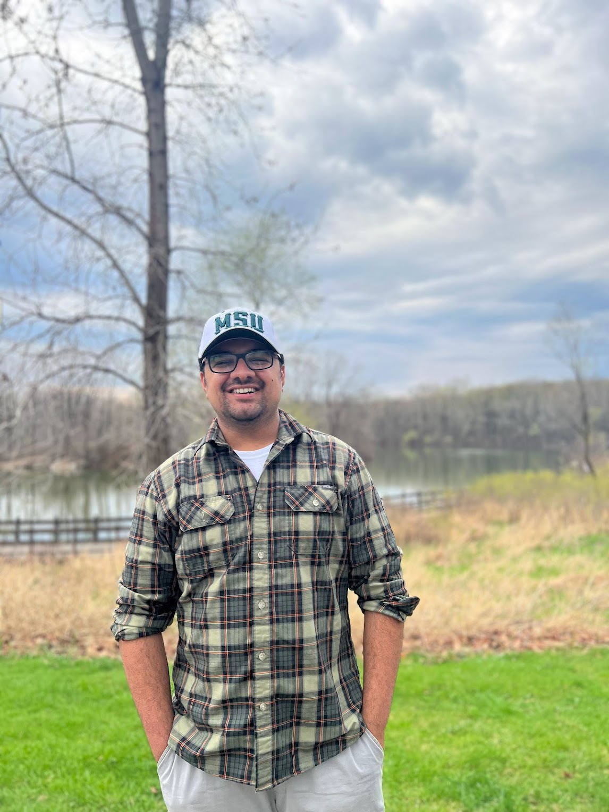

|
Gokul Bhusal
|
 |
I am a third-year PhD candidate in Applied Mathematics at Michigan State University where I work under the guidence of Professor Ekaterina Rapinhcuk.
I graduated from The University of Southern Mississippi in 2020 with a BS in Mathematics and Minor in Computer Science.
My research interest includes Network Science and graph-based ML/DL.
|
Contact
Email: bhusalgo@msu.edu
Office: C533 Wells Hall
News
Feb 2023 I passed my comprehensive exam and became a PhD candidate.
June 2021 I passed my qualifying exams.
August 2020 I started graduate school at Michigan State University.
Links
MSU Math
NSA@MSU
Mathematics Genealogy Project
|